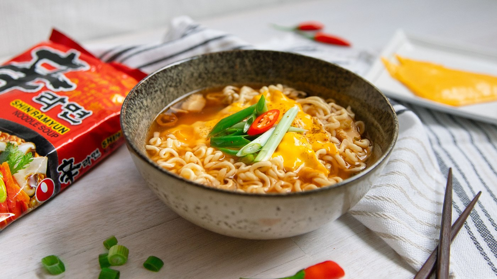

Cheesy Shin Ramyun

Description
Simple shin Ramyun with melted cheese over top.
Ingredients
- 1 pack Shin Ramyun
- 1 Sliced Cheddar Cheese
Instructions
- Cook your Shin Ramyun noodle of choice following the pack instructions.
- Place the cheese slice on top the cooked ramyun and let it melt - we recommend using kraft cheese.
Return to Homepage
More information here